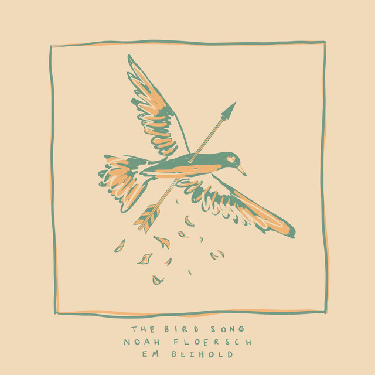
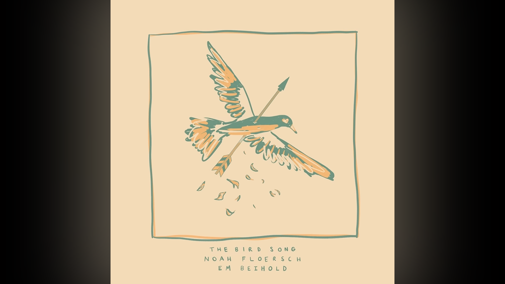

Apa itu The Bird Song?
"The Bird Song" adalah lagu dengan tema cinta yang unik, menggambarkan dua pasangan dengan metafora Burung dan Panah.
Mengapa harus menggunakan metafora Burung dan Panah? apa hubungan dari hewan dan benda mati tersebut? Kita akan bahas pada artikel ini!
Lirik The Bird Song
Berikut adalah lirik dari lagu tersebut:
Verse 1
She was a bird, I was an arrow
Both of us sure we were sword and a sparrow
Still, when we flew, we never knew (ooh-ooh)
Verse 2
There in the air, I felt her feathers
First all at once, then all together
When I went through, that's when I knew (ooh-ooh)
Chorus
I'm a killer, and a killer is a bad, bad thing to be
She's a giver, and a giver's even worse to folks like me
'Cause I never really wanna be the one (never)
To hurt somebody (wanna hurt someone)
But it just keeps happening (why?)
Yeah, it just keeps happening (why?)
Verse 3
I was a bird, he was an arrow
I was allured by the straight and the narrow
What could I do? His aim was true
Verse 4
Straight to the heart, I let it happen
I couldn't hardly have ever imagined
That when he went through me,
He'd hate what he's doin'
And make me feel stupid for choosin' him, too
Chorus
'Cause I'm a giver, and a giver is a bad, bad thing to be
He's a killer, and a killer's even worse for folks like me
'Cause I never really wanna feel (never)
The hurt from anybody (wanna feel the hurt)
But it just keeps happening (why?)
Yeah, it just keeps happening (why?)
Yeah, it just keeps happening
Bridge
Falling, never to fly again
Darling, together when everything's fading
The shade of the trees and the dark
I'm in love with the idea
Of dying with you in my arms
But not like... this
Outro
We can't really help who we are
We can't really help who we are
We can't really help who we are
Damned to the end from the start
We can't really help who we are
We can't really help who we are
We can't really help who we are
Damned to the end from the start
We can't really help who we are
We can't really help who we are (She was a bird)
We can't really help who we are (I was an arrow)
(Both of us sure) Damned to the end from the start (We were sword and a sparrow, I was a bird)
We can't really help who we are (He was an arrow)
We can't really help who we are
Mungkin terasa aneh pada awal-awal karena menggunakan metafora Burung dan Panah. Tetapi setelah membaca artikel ini kita akan paham maksud dari metafora pada lagu itu.
Latar Belakang
Pada lagu tersebut, terdapat 2 karakter yaitu Burung dan Panah. Kalimat "She was a Bird, I was an Arrow" menggambarkan hubungan mereka yang sudah bertolak belakang dari awal.
"Both of us sure we were sword and a sparrow" mengartikan bahwa mereka sadar bahwa diri mereka memang berbeda kontras. Mereka tahu hubungan itu berbahaya. Namun mereka yakin bahwa cinta mereka akan berhasil dan berbeda dari orang-orang. Bisa dibilang ini adalah bentuk optimisme yang memang sering muncul pada awal hubungan.
"Cinta kita pasti berbeda". Namun perlu diingat bahwa sifat mereka bertolak belakang.
"Still, when we flew, we never knew..." bermaksud bahwa ketika mereka bersama, mereka tak pernah tahu apa yang salah dari diri mereka. awalnya.
"There in the air, I felt her feathers", kalimat tersebut mengartikan bahwa ketika mereka bersama, sang Arrow merasakan kesakitan sang Burung. "When I went through, that's when I knew", Kalimat menyakitkan tersebut menjelaskan bahwa sang Arrow baru sadar telah menembus sang Burung.
Singkatnya, sang Panah terlambat menyadari bahwa ia menyakiti sang Burung.
Sudut Pandang Arrow
"I'm a killer". Kalimat tersebut bukan mengartikan pembunuh secara literal, melainkan sang Arrow memiliki sifat yang buruk terhadap pasangannya. misalnya ia selalu menyakiti, egois dan lainnya.
Pada kalimat "and a killer is a bad, bad thing to be". Ia pun tahu kalau orang seperti itu adalah orang yang buruk. Seolah kalimat tersebut menggambarkan bahwa ia menjilat ludah sendiri.
"She's a giver" Menggambarkan bahwa ia tahu kalau pasangannya adalah seorang yang sangat baik. Pasangannya (sang Burung) selalu memaafkan, mengalah, memahami dirinya
Ironinya adalah, ia tahu bahwa "Giver is even worse to folks like me". sang Panah tahu kalau orang baik adalah orang buruk baginya, Mengakibatkan siklus hubungan menjadi semakin buruk.
Ini bagian pentingnya, sang Panah mengatakan "Cause I never really wanna be the one to hurt somebody". Ini mengartikan bahwa ia sebenarnya tidak berniat jahat. Dia bukan orang yang ingin menyakiti. Ironinya lagi "It just keeps happening", mengartikan bahwa kesalahan sama terus terulang lagi. Ia merasa terjebak dalam pola perilaku yang tidak bisa dihentikan.
Sudut Pandang Bird
Pada bagian ini, perspektif berubah! Kini korban (sang Burung) yang berbicara. "I was allured by the straight and the narrow" menggambarkan bahwa sang panah meluncur dengan lurus. Sehingga sang Burung tertarik padanya. Ia melihat bahwa sang Panah memiliki arah hidup yang jelas, yakin dan kuat.
"Straight to the heart". Mengartikan bahwa sang Burung rela memberikan seluruh hatinya, demi cinta. Ironinya adalah pada kalimat "I let it happen", ia sadar hubungan mereka berbahaya. Tetapi memilih bertahan.
"He'd hate what he's doing" menggambarkan bahwa sang Burung tahu sang Panah juga menderita dengan sikapnya sendiri. Ia tahu lelaki itu benci dengan yang ia lakukan dan tidak menikmati penderitaan.
"Make me feel stupid for choosing him too" menggambarkan bahwa sang Burung mengalami Self-Blame atau menyalahkan diri sendiri atas hubungan mereka yang tidak sehat. Bukan hanya sakit karena disakiti. Tetapi juga malu karena memilih orang itu.
Pada bagian Chorus The Bird. Kurang lebih sama dengan sudut pandang The Arrow. Hanya saja ia juga tak suka dengan kesakitan yang ia alami sendiri.
Luka dalam Cinta

Kita mulai masuk pada bagian yang lebih kelam. Kalimat "Falling, never to fly again" menggambarkan bahwa sang Burung tak bisa terbang lagi, lebih tepatnya hubungan mereka telah hancur.
"I'm in love with the idea of dying with you in my arms" memiliki arti bahwa sang Burung berharap mereka bersama selamanya, namun kalimat ironi kembali muncul, "But not like this" menggambarkan bahwa sang Burung tidak menginginkan hubungan yang seperti itu, hancur dan sulit diperbaiki.
Outro
Masuk pada kalimat paling penting. "We can't really help who we are" mengartikan bahwa sikap mereka tak bisa diubah.
- sang Panah -> selalu menyakiti
- sang Burung -> selalu memaafkan
Lalu masuk pada nasib, "Damned to the end from the start", mereka mengganggap bahwa mereka memang ditakdirkan untuk tidak bersama.
Teori Bow
Ada yang menarik dari lagu ini, sang pencipta lagu memilih Panah dan Burung sebagai metafora. Kenapa hal tersebut menarik? karena Panah tidak bisa menembak dirinya sendiri sampai mengenai target. Karena itu ada teori bahwa dalam hubungan mereka ada Bow (Busur).
Busur memang tidak pernah disebutkan dalam lagu, tetapi sang Arrow sempat mengatakan "I never really wanna be the one to hurt somebody". Mengartikan bahwa ia tak menginginkan sikap pada dirinya itu ada.
Ini sudah masuk ranah opini ya, menurutku Bow adalah trauma yang membentuk Arrow. Maksudnya gini, Ketika Memanah, Bow harus dibengkokkan, talinya harus ditarik sangat kuat, Saat dilepas, Bow bergetar hebat. Jadi, sikap sang Panah kembali muncul karena Bow membuatnya harus hidup dalam tekanan agar tidak melesat menyakiti sang Burung. Ketika ia tidak bisa menahan diri, Bow pun beraksi dan melepaskan panah yang mengenai burung.
Kesimpulan
Banyak lagu bertema cinta berakhir dengan pembagian peran yang jelas: ada korban dan ada pelaku. The Bird Song justru menghindari itu. Panah tidak bangga telah melukai; ia dipenuhi penyesalan. Burung tidak membenci panah; ia memahami bahwa pasangannya juga tersiksa. Yang menjadi "musuh" bukanlah salah satu dari mereka, melainkan pola hubungan yang membuat mereka tak mampu hidup berdampingan tanpa saling melukai.
Itulah yang membuat lagu ini terasa begitu tragis: dua orang saling mencintai, sama-sama beritikad baik, tetapi tetap tidak mampu menyelamatkan hubungan karena sifat dan dinamika mereka sendiri.
Berikut adalah link lagu tersebut: Link ke Video
